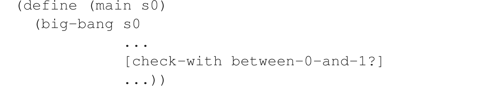

6.4 Checking the World
In a world program, many things can go wrong. Although we just agreed to trust that our functions are always applied to the proper kind of data, in a world program we may juggle too many things at once to place that much trust in ourselves. When we design a world program that takes care of clock ticks, mouse clicks, keystrokes, and rendering, it is just too easy to get one of those interplays wrong. Of course, going wrong doesn’t mean that BSL recognizes the mistake immediately. For example, one of our functions may produce a result that isn’t quite an element of your data representation for world states. At the same time, big-bang accepts this piece of data and holds on to it, until the next event takes place. It is only when the following event handler receives this inappropriate piece of data that the program may fail. But it may get worse because even the second and third and fourth event-handling step may actually cope with inappropriate state values, and it all blows up much later in the process.
To help with this kind of problem, big-bang comes with an optional check-with clause that accepts a predicate for world states. If, for example, we chose to represent all world states with Number, we could express this fact easily like this:
(define (main s0)
(big-bang s0 … [check-with number?] …))
As soon as any event-handling function produces something other than a number, the world stops with an appropriate error message.
A check-with clause is even more useful when the data definition is not just a class of data with a built-in predicate like number? but something subtle such as this interval definition:
; A UnitWorld is a number
; between 0 (inclusive) and 1 (exclusive).
In that case you want to formulate a predicate for this interval:
; Any -> Boolean
; is x between 0 (inclusive) and 1 (exclusive)
(check-expect (between-0-and-1? "a") #false)
(check-expect (between-0-and-1? 1.2) #false)
(check-expect (between-0-and-1? 0.2) #true)
(check-expect (between-0-and-1? 0.0) #true)
(check-expect (between-0-and-1? 1.0) #false)
(define (between-0-and-1? x)
(and (number? x) (<= 0 x) (< x 1)))
With this predicate you can now monitor every single transition in your world program:

If any of the world-producing handlers creates a number outside of the interval, or worse, a non-numeric-value, our program discovers this mistake immediately and gives us a chance to fix the mistake.
Exercise 114. Use the predicates from exercise 113 to check the space invader world program, the virtual pet program (exercise 106), and the editor program (chapter 5.10).